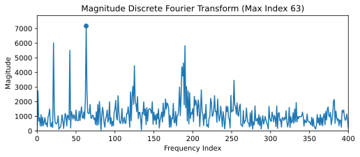
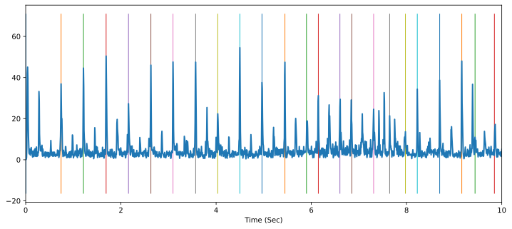
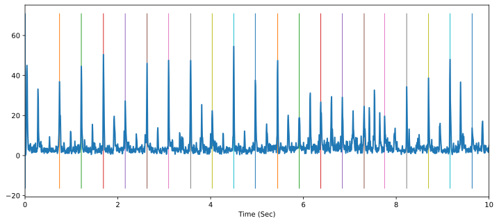
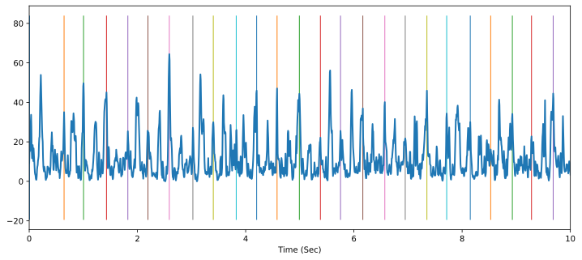

Assignment 4: Tempo Estimation And Beat Tracking (50 Points)
Chris Tralie
Parts 2 And 3 Due Friday 4/2/2021
Part 3 Due Friday 4/9/2021
Overview / Logistics
We are now moving into the analysis part of the course. You will use mid-level features built on top of spectrograms both to estimate the overall tempo of a clip of audio, as well as getting the computer to "tap its virtual foot" to the beat. Both the tempo and beat locations are aspects of rhythm.
Learning Objectives
- Practice numpy arrays, methods, and for loops in the service of musical applications
- Built audio novelty features on top of spectrograms and mel-spectrograms
- Use autocorrelation and the DFT to estimate tempo
- Implement a dynamic programming technique for beat tracking
What To Submit
When you are finished, submit your python filed novfn.py, tempo.py, and beat.py to Canvas. Finally, submit answers to the following questions on Canvas
- What would you like your name/pseudonym to be for the beat tracking contest?
- Briefly describe your beat tracking system in a couple of sentences so your classmates can understand what you did.
- Approximately how many hours it took you to finish this assignment (I will not judge you for this at all...I am simply using it to gauge if the assignments are too easy or hard)
- Any constructive suggestions for if I decide to give this assignment to future students?
- Any other concerns that you have. For instance, if you have a bug that you were unable to solve but you made progress, write that here. The more you articulate the problem the more partial credit you will receive (fine to leave this blank)
Programming Tasks
Click here to download the starter code for this assignment. You should also download two testing suites for tempo estimation and beat tracking from the following links, and extract them into the same directory as the code (interestingly, the two datasets contain the same 20 audio clips, but they each have different information in text files about them):
Tempo Dataset
https://www.music-ir.org/evaluation/MIREX/data/2006/tempo/tempo_train_2006.zip
User: tempo Password: t3mp0
It is assumed that you will extract this to the directory Tempo, so that, for example, the line
will actually run
Beat Tracking Dataset
https://www.music-ir.org/evaluation/MIREX/data/2006/beat/beattrack_train_2006.zip
User: beattrack, Password: b34trx
It is assumed that you will extract this to the directory Beattrack, so that, for example, the line
will actually run
Below are the imports you will need to test your code in jupyter
Part 1: Superflux Audio Novelty Functions (8 Points)
There is a whole zoo of possible ways of computing audio novelty functions that pick up on rhythmic events. For example, even all the way back in 2007, the authors of this paper experimented with 172 unique such novelty functions! In this section, we will explore a more recent method known as superflux for generating superior audio functions to the versions we described in module 16. This technique is described in detail in this paper from 2013, but we will summarize the key steps below. Before we do that, though, let's look at an example of how superflux compares to the naive technique. Consider the following audio clip, obtained from the librosa gallery.
Then, once you've implemented superflux by filling in the method get_superflux_novfn, the following code will run.
And produce the figure below:
As you can see, the peaks in the audio novelty function are better and more clearly separated from the background noise. We can also hear the difference between the two if we apply the provided sonification method that shapes noise, as explained in module 16
Notice how much clearer the rhythmic events sound in the superflux version
Algorithm Steps
Fill in the method get_superflux_novfn in the file novfn.py to implement the superflux pipeline, performing the following steps in sequence:
- Compute the absolute magnitude spectrogram (this has been provided for you using librosa's stft method)
-
Convert the spectrogram to a mel spectrogram via the provided
get_mel_filterbankmethod. As described in Section 2.1 of the superflux paper, the mel filterbank should contain 138 bins spanning frequencies from 27.5 hz to 16000hz. - Convert every element of the magnitude Mel-spectrogram MS to a log magnitude scale by applying the equation log10(MS + Gamma), where Gamma is a provided parameter (set to 1 in the superflux paper, as shown in equation 4 on page 3).
-
Perform a maximum filter; that is, replace every amplitude in every window by the maximum of the amplitudes of a window of length
max_winaround them. You can use scipy'smaximum_filtermethod, which has already been imported asmaximum_filter, to do this in one line. The shape of the filter should be(max_win, 1), or, in other words, a vertical window ofmax_win in size. -
Take the sum of positive differences of amplitudes across all frequency bins from a window to a window in the future, similarly to the naive version. However, the hop length in superflux is generally taken to be smaller than usual so the windows are sampled at a higher resolution, leading to a higher resolution audio novelty function. This means that adjacent windows change less. To compensate for this, instead of taking the difference in amplitudes for corresponding frequencies in adjacent windows, you should take differences with windows that are
muhops ahead in the future (as described in Section 2.1 of the superflux paper).Hint: Be sure to review module 16 video 0 and video 1 to recall how to do the positive difference step.
Part 2: Tempo Estimation
Now that we have clean audio novelty functions, we can estimate tempo from them with various techniques. To evaluate the results, we will compute tempo estimates with our code on the 20 examples in the tempo dataset. Provided with the tempo dataset are two tempos: a slow tempo and a fast tempo. We declare that our estimated tempo is correct if it is within 8% of either of these two "ground truth" tempos.
General Tip
I have provided code to test these methods on the dataset of 20 clips, but I would recommend just throwing some plots into jupyter as you incrementally develop these methods until you're confident you know what's going on. You don't even need to write code in tempo.py right away; just see if you can get an example to work in an notebook cell. Then, you can write a more general purpose method, and you can test and see if you get similar results.
Fourier-Based Tempo Estimation (7 Points)
In this section, you will fill in the method get_fourier_tempo to estimate the tempo, in beats per minute, of a tune based on its audio novelty function after subtracting its mean (this makes it so that bin 0, the average, is 0 and doesn't throw off the estimate). Below, we describe the theory.
Since rhythm is repetitive in popular music genres, the audio novelty function should be periodic; i.e. the spacing between beats should be fairly consistent, up to some missing beats for syncopation and other effects. This means that the Discrete Fourier Transform should have peaks at frequencies corresponding to the tempo, and possibly its harmonics. Let's consider the superflux novelty function of train4.wav in the tempo dataset (a clip from "Green Eyes" by Erykah Badu), as obtained by the following code
If we plot the magnitudes of the first 400 frequency bins of the DFT, we see the following plot:
There are three peaks at the beginning, and we end up finding that the max occurs at the third such bin at frequency index 63. The sample rate is 44100 and the hop length is 256, which means we have (44100/256) samples of the audio novelty function per second. The audio clip is 30 seconds long, which translates into an interval of 5165 samples in the audio novelty function at this rate. We put this all together to find that the frequency is
\[ \left( \frac{63 \text{ cycles}}{5165 \text{ samples}} \right) \left( \frac{44100/256 \text{ samples}}{1 \text{ second}} \right) \left( \frac{60 \text{ seconds}}{1 \text{ minute}} \right) = 126 \text{ beats/minute} \]
Actually, if we look at the ground truth tempos in the dataset, we see that they are 42bpm and 126bpm. So we actually found the higher tempo here. This tune is counted in triplets, so the higher tempo is 3x the lower tempo. We also see the lower tempo show up as a peak at index 21, which is 1/3 of the index we chose, but it is not the max peak.
Hint
Be careful that you only consider the first half of the DFT! Since a DFT with N frequencies on N samples is redundant, the second half will be the mirror image of the first half. If you pick a frequency in the second half, you will get what appears to be a ridiculously high tempo, but this is actually just the mirror of a much lower tempo.
Results
Let's first run this technique using the vanilla audio novelty function on all 20 clips. As we see, we get only 5/20 to within 8% of at least one of the two ground truth tempos. However, we see that many of the ones that are marked wrong are harmonics of the true tempo. For instance, we report a tempo of 306 for train3, which is double the highest tempo. This is one of the downsides of using Fourier here; the impulsive beats have many harmonics in their Fourier representation, and we sometimes pick a harmonic instead of the true base frequency corresponding to the rhythm. We will try to address this with another technique later, but it is a problem that will plague any tempo estimator to some extent.
One thing we can change here is to use an improved audio novelty function. So let's swap in the superflux method we worked so hard for. We get 6/10 here, so better, but probably not a statistically significant improvement
DFT-ACF Tempo Estimation (12 Points)
In this section, you will fill in the method get_acf_dft_tempo to compute an improved tempo estimate, based on a combination of the autocorrelation function (ACF) and the DFT (click here to review the ACF). In the process, you will also fill in the helper method dft_warped. The algorithm is described in Section 3.1.1 of Peeters, 2007, but we will summarize the theory and the steps below.
As we discussed, one of the issues with using the DFT is that we sometimes pick harmonics of the true rhythm, since harmonics exist for any periodic signal that isn't a pure sinusoid. We could try the autocorrelation function (ACF), but, as it turns out, this has the opposite problem: subharmonics of tempo. The ACF takes a dot product between a signal and its shifts, so it will have a local max if the shift coincides with the period T. But this also means that it will have peaks at 2T, 3T, 4T, etc. Since the the period is inversely related to the frequency, these longer periods actually correspond to fractions of tempo.
We can try to get the best of both worlds by multiplying DFT by the ACF at each possible tempo. The DFT should be small at subharmonics, while the ACF should be small at harmonics, so all but the true tempo should be damped down. The challenge here is that the ACF and DFT are expressed in different units. In particular
- The DFT is expressed as a frequency as a number of cycles over the extent of the audio novelty function.
- The ACF is expressed as a period in samples per cycle.
What this means is that we have to warp the domain of the DFT to coincide with the domain of the ACF. I've provided a skeleton helper method dft_warped which you should fill in to do this. In this process, higher bins of the DFT should turn into lower bins of the ACF, since period and frequency are inversely related. Visually, this looks like taking the mirror image of the DFT and compressing it towards the origin. Mathematically, for an audio novelty function with N samples, a shift T in the ACF corresponds to frequency index N/T. So we want to create the warped dft, dftw, as the composition
\[ \text{dftw}[T] = \text{dft}[N/T] \]
But note that N/T may not be an integer, so to figure out what should go in warped DFT bin T, we should interpolate between the floor and the ceiling of N/T. We can do this using linear interpolation. Let i1 be int(np.floor(N/T)) and i2 be int(np.ceil(N/T)), then the linear interpolation is
\[ \text{dftw}[T] = \left( \frac{N}{T}-i1 \right)*\text{dft}[i2] + \left( i2-\frac{N}{T} \right)*\text{dft}[i1] \]
Example: train5.wav
The image below shows this on train5.wav in the tempo dataset. As you can see, the ACF (first plot) has many peaks at integer multiples of the first peak at index 76, while the DFT (second plot) has a peak at the first harmonic of its maximum at index 102. If we warp the DFT (third plot) by takings its mirror image and compressing it towards the origin, then it lines up with the ACF, and we can take the point by point product, which gives us the combined plot on the bottom with the harmonics and subharmonics cancelled out. We can now say confidently that the tempo occurs at a shift of 76 samples. This occurred at a hop length of 256 samples at a sample rate of 44100, so this corresponds to a tempo of
\[ \left( \frac{ 1 \text{ beat} }{ 76 \text{ samples} } \right) \left( \frac{ (44100/512) \text{ samples}}{ 1 \text{ second}} \right) \left( \frac{60 \text{ seconds}}{ 1 \text{ minute}} \right) = 68 \text{beats/minute} \]
which is quite close to one of the ground truth tempos of 68.5 bpm.
Example: train14.wav
Below is another example on train5.wav in the tempo dataset. Here we really see the effect of damping down the subharmonics of the ACF
Results
Below are the results, which show a substantial improvement over everything we've seen so far, with a 12/20! Obviously, there is still room for improvement, but this is a surprisingly good agreement with human annotations given how little code we wrote, and most of the errors are "octave errors" where the tempo is a double or a half of one of the ground truth tempos.
Part 3: Beat Tracking
Now that we have good audio novelty functions and tempo estimation schemes, we can use them to go a finer grained representation of rhythm and actually have the computer "tap its virtual foot to the beat." We designed audio novelty functions to spike for likely beat events, but not all peaks correspond to true beats (false positives), and not all beats show up as spikes (false negatives). Therefore, we somehow have to balance picking tap times in the audio novelty function that correspond to high values, while also skipping some high values or picking low values every once in a while to keep the tempo going.
To accomplish this, we will implement what is now a classical technique by following this 2007 paper by Dan Ellis. This technique uses dynamic programming to solve an optimization problem trading off peak picking in the audio novelty function and tightness around a tempo. As such, it has a lot in common with dynamic time warping. First, let's define an objective function to maximize, and then we will explain how to maximize it to obtain an optimal sequence of beats using dynamic programming and backtracing. Let's start with the following parameters
- An audio novelty function n[i]
- A tempo T in units of the audio novelty function
- a sequence of B beats b[j], which are also specified in units of the audio novelty function, so that n[b[j]] gives the novelty function associated with the jth beat
\[ c(n, b, T) = \sum_{j = 1}^{N-1} \left( n[b[j]] - \alpha \left| \log \left( \frac{b[j]-b[j-1]}{T} \right) \right| ^2 \right) \]
Since we want to maximize this function, the n[b[j]] term for each beat promotes choosing beats at locations where the novelty function is high. But we also want to make sure we keep a consistent tempo, so the second term penalizes deviations from the tempo T between chosen beat locations. If the tempo is perfectly T, then b[j] - b[j-1] will always be T, so the second term will be 0. But the moment the tempo is too fast or too slow between two adjacent beats, that term will deduct from the objective function. Still, we may be happy to accept a slight penalty in tempo so that our beats reside at locations of high novelty. The α parameter chooses how much we want to penalize for deviations of tempo. A higher α will lead to a more consistent tempo, but the beats may not exactly align with rhythmic events. By contract, a low α will cause the computer to tap its foot very consistently with rhythmic events, but the tempo may be all over the place.
Solving for beats
Given a tempo T and an audio novelty function n[i], we can solve for optimal beats via dynamic programming. We need to create two 1D arrays, cscore and backlink, each with as many samples as there are samples in the audio novelty function:
cscore[i]is a dynamic programming array that stores the maximum possible value of the objective function when solving a subproblem from index 0 to index i of the audio novelty function.backlink[i]stores the index of the last beat that was chosen before index i in the optimal solution with scorecscore[i]
To fill these in, we need a loop that builds up the subproblems from small to large, until we have the whole problem solved, just as in dynamic time warping. Below is the algorithm to do this using a recurrence relation that is solved with dynamic programming. Note that for simplicity of the description, the tempo T is assumed here to be in units of samples of the novelty function per beat, which is a period, though the tempo is provided in units of beats per minute, which is a frequency, as an argument to the method. Also, when you write the code, you will have to be careful to round and cast variables as int when necessary.
Pseudocode
-
for i from 2T to len(cscore)
-
To solve for
cscore[i], the optimal score up to index i, we suppose that we're choosing a beat at index i. Then, we recursively compute the score, via dynamic programming, by checking over possible beat indices j that could represent the beat that comes directly before i. The recurrence for this is as follows:\[ \text{cscore}[i] = \text{max}_{j = i-2T}^{i-T/2} \left( n[i] + \text{cscore}[j] - \alpha \left| \log \left( \frac{i-j}{T} \right) \right|^2 \right) \]
We restrict ourselves to previous beat locations j that occur between half of the tempo and 2x the tempo before index i. We get credit for
n[i], the novelty function for our newest beat at index i, as well ascscore[j], the best score of all possible beats chosen up to and including index j. But we also deduct a penalty depending on the interval between beat j and beat i.Along with storing the maximum possible value in
cscore[i], we also store the the index j that led to the maximum inbacklink[i].
-
To solve for
-
Once the entirety of
cscoreandbacklinkis filled in, we can extract the optimal beat locations. Starting at the index that maximizescscore, we follow the links inbacklinkto pick all of the beats. We will be finished once we get back to the beginning. For example, suppose we had the followingbacklinkarray (which, for pedagogical purposes, is much short than what you will get on real audio data)backlink index 0 1 2 3 4 5 6 7 9 9 10 value 0 0 0 1 2 2 5 4 6 5 8 We can represent this array visually as a 1D directed acyclic graph

Then we simply follow the arrows until we get to 0. For example, let's say
cscore[9]was the maximum. Then we follow the path9 -> 5 -> 2 -> 0For another example, if
cscore[10]was the maximum, we follow the path10 -> 8 -> 6 -> 5 -> 2 -> 0You should of course reverse the order of this list so that the beats you return start at smaller indices, and you should also convert them from units of the audio novelty function to beats per minute.
Matlab code
You may also be interested in referencing the matlab code in the paper, but you should be careful since although Matlab is a predecessor to numpy, the syntax is different and may throw you off a bit.
Sonifying Beats (5 Pts)
As with all of our features, it's helpful to "sonify" what we have computed so we can hear its quality. Fill in the method sonify_beats to create little blips that occur at beat locations. In particular, you should sonify each beat by adding in a small 440hz sinusoid at each beat location. Each blip should be added in to a slice of the array starting at the beat location and continuing for blip_len seconds. For example, if you run the following code to load one of the ground truth human annotators on the third train clip
then you should hear this
then you should hear this
Dynamic Programming Beat Tracking (15 Points)
Fill in the method get_beats to perform dynamic programming beat tracking, according to the description above. You can use both the sonify_beats method, as well as the provided plot_beats method, to help check to make sure it's working well. For example, consider generating the following novelty function for the first example in the beats dataset
The tempo in this tune is 129.5 beats per minute. If we're slightly off on our tempo estimate and guess 120, and we're also very permissive with sticking to the tempo, we don't always get a consistent pulse, and we get subdivided beats at times

If, however, we increase the α penalty of tempo deviation from 1 to 100, the algorithm is less tempted to add beats on some of the high audio novelty function regions in subdivided places

Here's a slightly tougher example
And here are the results

Here's yet another example, where we really have to turn up α so that the algorithm is not tempted to take a few large peaks in novelty to stay on tempo (e.g. around 3 seconds and 5.5 seconds)
And here are the results

Making Your Own System (3 Points)
Now that you have code to automatically estimate tempo and beat locations, you can make a full pipeline to estimate beats from raw audio. Fill in the method get_beats_fromaudio to do this. To get full credit, you can simply apply the pipeline we've used so far here by computing the audio novelty function, estimating tempo, and applying dynamic programming beat tracking with that tempo. But if you work to tweak this a little bit, you might get a superior system. In fact, we will have a class-wide contest on previously unseen data, and the winner will get 3 points of extra credit. Systems will be scored by seeing which systems maximize true positives in beat locations, while also minimizing false positives. Here are a few things to try to bring your system to the next level, though you are certainly not limited to these suggestions!
- Tweak the parameters in all stages of the pipeline to get the best results. In particular, with the superflux novelty function, use a mel filterbank with a smaller maximum frequency, or fewer or more bins. You can also tweak mu and the window length and hop length.
- Try to clean up the audio novelty function by subtracting off the local mean in small windows and thresholding anything that's negative after that to 0. This will promote peaks in the audio novelty function and suppress noise.
- If you're doing dynamic programming beat tracking, try biasing at different tempo levels beyond the one that maximizes the acf-dct (e.g. also the second highest and third highest scores) and seeing which tempo level leads to beats with the most consistent spacing.
- Experiment with the tempo estimation scheme suggested in section 3.2 of the Ellis paper.
- Instead of using a single tempo estimate, perform "short time autocorrelation" to estimate tempo in windows, and try to stick to this varying tempo in each window as you're doing dynamic programming beat tracking.